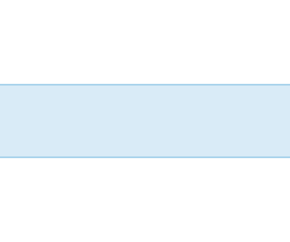
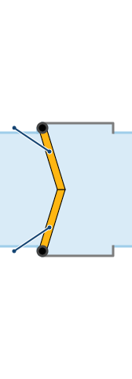
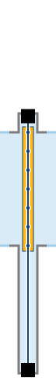
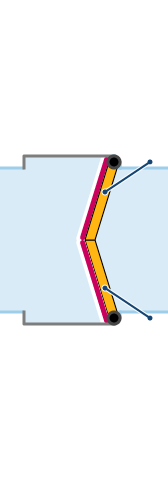
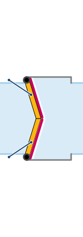
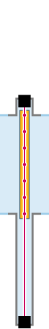
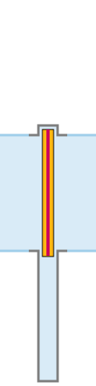
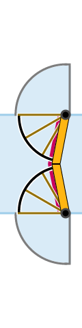
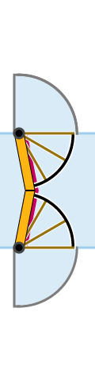
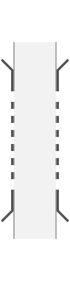

VRW
vaarweg
Vaarweg buiten de kolk

KS1
kolksegment-smal-enkele-lengte
Smal ("glad") kolksegment
KB1
kolksegment-breed-enkele-lengte
Verbreed kolksegment

KS4
kolksegment-smal-vierdubbele-lengte
Smal ("glad") kolksegment, viervoudige lengte
KB4
kolksegment-breed-vierdubbele-lengte
Verbreed kolksegment, viervoudige lengte

OR1
kolkovergang-recht-smal-boven-breed
Hoekige ingangsadaptor boven
OR2
kolkovergang-recht-smal-midden-breed
Hoekige ingangsadaptor midden

OR3
kolkovergang-recht-smal-onder-breed
Hoekige ingangsadaptor onder

OR4
kolkovergang-recht-breed-smal-boven
Hoekige uitgangsadaptor boven
OR5
kolkovergang-recht-breed-smal-midden
Hoekige uitgangsadaptor midden
OR6
kolkovergang-recht-breed-smal-onder
Hoekige uitgangsadaptor onder

OS1
kolkovergang-schuin-smal-boven-breed
Afgeschuinde ingangsadaptor boven

OS2
kolkovergang-schuin-smal-midden-breed
Afgeschuinde ingangsadaptor onder

OS3
kolkovergang-schuin-smal-onder-breed
Afgeschuinde ingangsadaptor onder

OS4
kolkovergang-schuin-breed-smal-boven
Afgeschuinde uitgangsadaptor boven
OS5
kolkovergang-schuin-breed-smal-midden
Afgeschuinde uitgangsadaptor boven
OS6
kolkovergang-schuin-breed-smal-onder
Afgeschuinde uitgangsadaptor onder

OA1
kolkovergang-rond-smal-boven-breed
Ronde ingangsadaptor boven

OA2
kolkovergang-rond-smal-midden-breed
Ronde ingangsadaptor midden
OA3
kolkovergang-rond-smal-onder-breed
Ronde ingangsadaptor onder
OA4
kolkovergang-rond-breed-smal-boven
Ronde uitgangsadaptor boven

OA5
kolkovergang-rond-breed-smal-midden
Ronde uitgangsadaptor midden
OA6
kolkovergang-rond-breed-smal-onder
Ronde uitgangsadaptor onder
DAM
puntdeur-mee
Puntdeur, stroomafwaarts
DAT
puntdeur-tegen
Puntdeur , stroomopwaarts
DBM
puntdeur-dubbelkerend-pin-mee
Puntdeur met pin, stroomafwaarts
DBT
puntdeur-dubbelkerend-pin-tegen
Puntdeur met pin, stroomopwaarts
DCM
puntdeur-dubbelkerend-enkelvoudig-mee
Dubbelkerende enkelvoudige puntdeur, stroomafwaarts

DCT
puntdeur-dubbelkerend-enkelvoudig-tegen
Dubbelkerende enkelvoudige puntdeur, stroomopwaarts
DDM
draaideur-bovensluitend-mee
Draaideur sluitend naar rechtsboven, stroomafwaarts
DdM
draaideur-ondersluitend-mee
Draaideur sluitend naar rechtsonder, stroomafwaarts
DDT
draaideur-bovensluitend-tegen
Draaideur sluitend naar linksboven, stroomopwaarts
DdT
draaideur-ondersluitend-tegen
Draaideur sluitend naar linksonder, stroomopwaarts

DEO
hefdeur
Hefdeur

DFO
hangroldeur-bovensluitend
Hangroldeur, naar boven sluitend

DfO
hangroldeur-ondersluitend
Hangroldeur, naar onder sluitend

DGO
roldeur-bovensluitend
Roldeur, naar boven sluitend

DgO
roldeur-ondersluitend
Roldeur, naar onder sluitend
DHM
waaierdeur-mee
Waaierdeur, stroomafwaarts
DHT
waaierdeur-tegen
Waaierdeur, stroomopwaarts
DIM
segmentdeur-mee
Segmentdeur, stroomafwaarts
DIT
segmentdeur-tegen
Segmentdeur, stroomopwaarts
HAM
puntdeur-mee-hwk
Puntdeur, stroomafwaarts, met hoogwaterkerende functie ("stormdeur")
HAB
puntdeur-tegen-hwk
Puntdeur, stroomopwaarts, met hoogwaterkerende functie ("stormdeur")
HBM
puntdeur-dubbelkerend-pin-mee-hwk
Puntdeur met pin, stroomafwaarts, hoogwaterkerende functie ("stormdeur")
HBT
puntdeur-dubbelkerend-pin-tegen-hwk
Puntdeur met pin, stroomopwaarts, hoogwaterkerende functie ("stormdeur")

HCM
puntdeur-dubbelkerend-enkelvoudig-mee-hwk
Dubbelkerende enkelvoudige puntdeur, stroomafwaarts, en met hoogwaterkerende functie ("stormdeur")

HCT
puntdeur-dubbelkerend-enkelvoudig-tegen-hwk
Dubbelkerende enkelvoudige puntdeur, stroompwaarts, en met hoogwaterkerende functie ("stormdeur")
HDM
draaideur-bovensluitend-mee-hwk
Draaideur sluitend naar rechtsboven, stroomafwaarts, met hoogwaterkerende functie ("stormdeur")
HdM
draaideur-ondersluitend-mee-hwk
Draaideur sluitend naar rechtsonder, stroomafwaarts, met hoogwaterkerende functie ("stormdeur")
HDT
draaideur-bovensluitend-tegen-hwk
Draaideur sluitend naar linksboven, stroomopwaarts, met hoogwaterkerende functie ("stormdeur")
HdT
draaideur-ondersluitend-tegen-hwk
Draaideur sluitend naar linksonder, stroomopwaarts, met hoogwaterkerende functie ("stormdeur")
HEO
hefdeur-hwk
Hefdeur met hoogwaterkerende functie ("stormdeur")

HFO
hangroldeur-bovensluitend-hwk
Hangroldeur, naar boven sluitend met hoogwaterkerende functie ("stormdeur")

HfO
hangroldeur-ondersluitend-hwk
Hangroldeur, naar onder sluitend met hoogwaterkerende functie ("stormdeur")

HGO
roldeur-bovensluitend-hwk
Roldeur, naar boven sluitend met hoogwaterkerende functie ("stormdeur")

HgO
roldeur-ondersluitend-hwk
Roldeur, naar onder sluitend met hoogwaterkerende functie ("stormdeur")

HHM
waaierdeur-mee-hwk
Waaierdeur, stroomafwaarts, met hoogwaterkerende functie ("stormdeur")

HHT
waaierdeur-tegen-hwk
Waaierdeur, stroomopwaarts, met hoogwaterkerende functie ("stormdeur")
STA
stopstreep-stroomafwaarts
Stopstreep, deur stroomafwaarts
STO
stopstreep-stroomopwaarts
Stopstreep, deur stroomopwaarts
AFS
afsluitingsschot
Afsluitingsschot
AFB
afsluitingsschot-verbreed-kolksegment
Afsluitingsschot verbreed kolksegment

VAN
vanginrichting
Vanginrichting; Ter bescherming van de Sluisdeur tegen aanvaringen.

XBV
brugdeel-vast
Vast Brugdeel

XBB
brugdeel-bedienbaar
Bedienbaar Brugdeel

XBW
weg-over-sluisdeur
Weg over een Sluisdeur; een weg die sluit en opent met de stand van de betreffende deur.